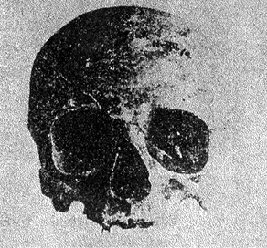

Yeraltında Yüzlerce Faili Meçhul ve... Sinan’ın ‘Başı’na Gelenler!
53 yıl önce kızgın bir ağustos sıcağında Mimar Sinan’ın mezarı açılıyor; kafatası alınıyor, ölçülüp biçildikten sonra Antropoloji Müzesine kaldırılıyor... Antropoloji Müzesi mi? Böyle bir kurum yok ve de hiçbir zaman olmadı...
Dünyada Hitler’in, Mussolini’nin revaçta olduğu, ‘kan’a ve ‘kafa’ ya dair ifadelerin muteber görüldüğü, bizde de Güneş Dil Teorisinin gündeme geldiği 1930’lu yıllardır. Kültür Bakanlığı’nca öğretmenlere yönelik bir tamim çıkartılır ve eski mezarlardan çıkacak olan Selçuklu ve Danişmendoğullarına ait kafataslarını İstanbul’daki Antropoloji Müzesi’ne göndermeleri istenir (5 Ağustos 1935 tarihli Cumhuriyet Gazetesi). Aynı yıl Şevket Aziz Kansu, Dil Tarih Coğrafya Fakültesi Fiziki Antropoloji bölümünü kurar. Anadolu’nun çeşitli yerlerinden gelen iskeletler ve kafatasları Kansu’nun başında bulunduğu bir heyet tarafından burada tetkik edilir.
Şevket Aziz Kansu Mimar Sinan, Abdülhak Hamit gibi Osmanlı döneminde yaşamış şahsiyetlerin kafatası tetkiklerini fasiküller halinde yayınlarken; Selçuklu Türkleri üzerindeki araştırmalar kitaplaştırılır. Devlet Basımevi tarafından 1937’de yayınlanan kitapta yüzlerce Selçuklu Türkü’nün kafatası ve iskelet tetkikleri yer alıyor. Kitabın 7. sahifesinde Haziran 1935 yılından itibaren başlayan çalışmaların birçok soruya cevap teşkil ettiği kaydedildikten sonra şöyle deniliyor: ‘Türk Tarih Kurumu’nun daima hayırlı ve güzel yardımlarıyla yapmış olduğum bu tetkik derhal söylemeliyim ki daha ilk bir adımdır. Oğuz-Selçuk Türkleri üzerine başlanan bu tetkiklerin devamı ve miktarca çoğalması ve Selçuklu mumyalarının da teşmil edilmesi lazımdır’.
Ağustos 1935 tarihli Kurun gazetesi nüshası

Şevket Aziz Kansu’nun tetkik ettiği Selçuklu Türkleri kafataslarından bazıları
Tarihçi İbrahim Hakkı Konyalı, Kansu’nun kitapta belirttiği temennilerini doğruluyor. Konyalı’nın imzasıyla Sebil Dergisi’nde çıkan yazıda Kütüphaneler ve Müzeler Umum Müdürü Ahmet Tevfik’ten aktarıldığına göre Alaattin Camii’nin avlusunda bu türbenin içerisinde mumyalanmış Selçuklu sultanlarının cesetleri vardır. O dönemde bu mumyalar çıkartılıp incelenir, sonra da çuvallara doldurulup bir kenara atılır. Konyalı “Köpekler mumyaları sağından solundan çekiştiriyorlardı, ben gördüm” diyor.
Antropolojik araştırmalar raporlar halinde yayınlandı
Hacettepe Üniversitesi Fiziki Antropoloji öğretim görevlisi Prof. Dr. Metin Özbek bu araştırmaların daha çok İslam öncesi döneme ait olduğunu söylese de gerek Kültür Bakanlığı’nın bildirisi, gerekse Konyalı’nın anlattıkları bu dönemde birçok tarihi şahsiyetin mezarlarının açıldığının ‘aşikâr’ olduğunu gösteriyor. Aşikar olmayan ise Ankara’ya gelen iskelet ve kafataslarının tetkik bittikten sonra müzeye mi kaldırıldığı yoksa çıkarıldıkları yere mi defnedildiği. Bu sorunun cevabını somut bir örnek olarak Mimar Sinan özelinde ele almak gerekiyor.
Sermimaran-ı Hassa’nın ‘kafatası’ nerede?
Mimar Sinan’ın mezarının açılmasına giden yol 1930’da Cumhuriyet’in tarih ideolojisini kuran Türk Kavminin Ana Hatları isimli bir kitapla başlıyor. Kitap üzerinde birçok tartışma olur. Bunun üzerine Atatürk, kitabın ‘ayakları yere basmayan’ bazı bölümlerinin yeniden müstakil monoğrafiler halinde hazırlanmasını emreder. Yıl 1935’tir. Osmanlı mimarisi bölümü Sedat Hakkı Erdem’e tevdi edilir. 29 Temmuz 1935’te Atatürk’ün başkanlığında Dolmabahçe Sarayında toplanan Türk Tarih Kurumu Heyeti, Sedat Hakkı Erdem’in ‘Osmanlı Mimarisi’ yazısını tartışmaktadır. Rıfkı Melül Meriç’in 1939’da hazırlayıp ancak 1965’te yayınlayabildiği “Mimar Sinan 1: Hayatı, Eseri” adlı çalışmasının önsözünde o günün TTK Başkanı Uluğ İğdemir’den naklettiğine göre Erdem, Mimar Sinan’ın büyük bir dahi olmakla beraber Osmanlı kültürü içerisinde eserlerini ortaya koyduğunu söyler. Osmanlı-Koca Sinan ayrımı yapmayan bu yorum TTK Asbaşkanı Prof. Dr. Afet İnan’ı rahatsız eder. İnan, Mimar Sinan hakkında müstakil ve etraflı bir çalışmanın yapılmasını ister. Ankara Üniversitesi Dil Tarih Fakültesi’nin önündeki Mimar Sinan heykeli bu toplantının eseridir. Mustafa Armağan Afet İnan’ın istediği çalışmaların biyolojik tetkiki içerdiğini de söylüyor.
Mezarı açılıyor...
1 Ağustos 1935’te Türk Tarih Kurumu Başkanı Hasan Cemil Çambel, Şevket Aziz Kansu ve Afet İnan’ın hazır bulunduğu bir heyetçe Mimar Koca Sinan’ın Süleymaniye’deki mezarı açılır. Kurun Gazetesi o günkü izlenimlerle ilgili olarak iskeletin büyük kısmının zedelendiğini ama kafatasının sapasağlam durduğunu bize aktarıyor. Dolayısıyla tetkikler kafatası üzerine yoğunlaşmıştır. Şevket Aziz Kansu, raporunda Sinan’ın kafatasının 89-90 ölçülerinde yani Hiber-Brakisefal olduğunu belirtir. Gene 5-6 Ağustos tarihli Cumhuriyet ve Kurun gazetesine göre çıkan sonuç memnuniyetle karşılanır, kafatası Antropoloji Müzesi’nde muhafaza edilmek üzere alıkonulur ve mezar kapatılır. Buraya kadar yapılan ve devrin genel yapısını gösteren işlemler, milli-devlet oluşumunda olağan görülmelidir belki.
Mimar Sinan’ın Süleymaniye’deki mezarının 1940’lı yıllardaki görünümü
İbrahim Hakkı Konyalı’nın 1948’de çıkarttığı ve Mimar Sinan’ın kökağacını incelediği kitapta ilginç bir anekdot var. 1940’lı yıllarda restorasyon maksadıyla Sinan’ın muhteşem eseri Süleymaniye Camii’nin gölgesindeki mütevazı mezarı açılır. Önceki gelişmelerden haberi olmadan mezarı açan heyet telaşa kapılır. Çünkü kafatası mezarda yoktur. Daha önce de belirtildiği gibi Antropoloji Müzesine kaldırılmıştır. Antropoloji Müzesi mi?... Hiçbir zaman olmadı...
1930’larda incelenmek için mezarlarından çıkartılan kafataslarının akibeti hakkında bir bilgi yok.
Kim bilir...
Başta Ankara Üniversitesi Dil Tarih Coğrafya Fakültesi Fiziki Antropoloji bölümü öğretim görevlileri olmak üzere görüştüğümüz onu aşkın antropolog bu ‘kayıp’ olayını ilk kez duyduklarını ve çok şaşırdıklarını söylüyorlar. Belki o dönemin gazetelerine yanlış yansımıştır, Antropoloji Müzesi değil de Etnoğrafya Müzesi ya da Anadolu Medeniyetleri Müzesi’nde olabilir diye oralarda araştırıyoruz. Fakat sonuç değişmiyor: ‘Bizde yok, duymadık, görmedik...’ Prof. Dr. Metin Özbek yaşayan hiçbir antropoloğun bu olayı bilemeyeceğini, bilecek olanların hepsinin rahmetlik olduğunu söylüyor.
Peki Koca Sinan’ın kafatası nerede? 80’li yılların sonlarına doğru gerçekleştirilen Mimar Sinan yılında aktif görev alan kuruluşlardan bir-ikisi bilebilir mi acaba?..
Atatürk’ün de başı ölçüldü
Şapka devriminden sonra fes kenara atılmış herkes şapka giymeye başlamıştı. Şapkayla beraber bunu giyecek olanların kafa ölçüleri de ortaya çıkmıştı. 1930 yılında Ankara’dayız. O zamanın Milli Eğitim Bakanı Dr. Reşit Galip elindeki bir makineyle herkesin kafatasını ölçüyor. Dolikosefal mi, Brakisefal mi? Yani biz hizmetkârların konuşmalarına göre hayvan mı, yoksa insan mı? Hatırımda kaldığına göre 77-79 gelen kafalar Dolikosefal, 81’den ileri olanlar da Fordman Brakisefal.
Atatürk’ün başı ölçüldü ve 81 geldi. Odadakiler sıraya girmişlerdi, başlarının ölçülerini bekliyorlardı.
Öbürlerinden önce benim başım ölçüldü. 81 geldi. Sevinmeye başlamıştım. Öyle ya Atatürk’le aynı kafa ölçüsünü taşıyordum. Fakat sevincim uzun sürmedi. Atatürk “Olmaz o hayvan kafalıdır. Bir yanlışlık olmasın” dedi.
Neredeyse ağlayacaktım. Alındığımı anlayınca gülmeye başladı. Tekrar dalıma basarak; “Baksana Çelebi’nin kafasına. O melon kafanın benimkiyle ilgisi var mı?”
(Atatürk’ün Uşağı İdim, Cemal Granda anlatıyor, Hürriyet Yayınları, Yazarı Turhan Gürkan)
***
Mustafa Armağan (Yazar):
Çok bilinmeyenli bir denklem...
Mustafa Armağan, Mimar Sinan’ın kafatasının kayıp olduğunu ilk defa yazdı ve hâlâ da yazmaya devam ediyor. Bir insanın hayattayken gövdesiyle başını ayırma ile öldükten sonra ayırmanın aynı şeyler olduğunu, hiçbir ölünün bunu hak etmediğini söylüyor. ‘Mimar Sinan ki bizim bütün dünyaya iftiharla takdim ettiğimiz bir insandır... Kafatasçılık yapmak istemiyorum ama bu kafatasları nerededir? Ölülere saygı gösterilmesi gerekiyor, ölen bir insanın manevi şahsiyeti vardır’ diyor.
Armağan, Sinan’ın kafatasıyla ilgili olarak ulaşabileceği her yere ulaşmaya çalışmış ama aradığını bulamamış. En çok üzüldüğü şey de toplumun hafızası olması gereken Türk Tarih Kurumu’nda bu konuda bir tutanağın olmaması. Ona göre bu çok bilinmeyenli bir denklem. Armağan’a bu denkleme nasıl ulaştığını sorduk.
Mimar Sinan’ın kafatası ile ilgili ilk yazıyı Mustafa Armağan yazdı.
– Bu olay nasıl ortaya çıktı?
Bu benim okumamla ilgili bir şey. Birbiriyle alakasız kitaplar okuyorum. Daha önceden bu konuda bazı şeyler duymuştum ama asıl Herkül Midas’ın Türk-Yunan ilişkilerini konu alan eserinde 1935’li yıllardaki Türkçü tezlerden bahsederken düştüğü bir dipnot dikkatimi çekti. Orada ‘Hatta 1935 tarihinde bu tezleri ispat etmek için Mimar Sinan’ın mezarı açıldı. Türk’tü. Brakisefal bir kafa yapısına sahipti’ yazıyor. Bu benim araştırmamın başlangıcını teşkil etti. O günkü gazetelerden, bazı kitaplardan hareketle Mimar Sinan’ın kafatasının yerinin belli olmadığını tespit ettim...
– Ulus devlet sürecinde batıda da bu tür olaylara rastlanmış olabilir mi?
Leonarda de Vinci’nin mezarından kafatası çıkartılsa sanmıyorum ki bu normal karşılansın. Goethe’nin çalışma masasındaki mürekkep lekelerini bile koruyan insanların bizzat bedeni ile ilişkili bir kemik parçasına nasıl ihtimam göstereceklerini, ona yapılan saygısızlığı nasıl cezalandıracaklarını tahmin etmek zor olmasa gerek. Gelişmiş batı ülkelerinde bu bana muhal gibi geliyor.
Özellikle ulus devletin kültürel köklerinden birisini oluşturan bir kişi üzerinde böyle bir şeyin yapılması imkansız gibi. Bu duruma belki Afrika’da rastlanabilir.
***
Ord. Prof. Dr. Reha Oğuz Türkkan (Türkolog):
Olayı ben de hatırlıyorum
17 yaşındaydım. Gazetelerde çıktığını hatırlıyorum. O dönemde Şevket Aziz Kansu, Mimar Sinan’ın kafatası tetkikini gösteren bir broşür yayınladı. Hiper-Brakisefal çıktığını öğrendik. Benim hatırladığım Etnoğrafya Müzesine kaldırıldığı. Orada yoksa ciddi bir laubalilik ve saygısızlık var demektir. Tabii ki bir insanı tanımak için fiziki antrolojik tetkikler yeterli değildir. Ama o dönemlerde Mimar Sinan gibi, Sokullu gibi birçok kişinin Ermeni veya Rum oldukları iddia ediliyordu. Hatta Amerikalı bir yazar Architec John (Mimar John) adlı kitap çıkarmıştı. Architec John da Mimar Sinan oluyor... Mimar Sinan’ın kuvvetle muhtemel Ermeni olduğunu, küçük bir ihtimalle de Yunan olduğunu söylüyordu... Onu münazaraya çağırdık. Dedim ki Türk olduğuna dair birçok delil var; birincisi antropolojik deliller. Bu konuda Şevket Aziz Kansu’nun raporu var... Ayrıca soy kütüğüne bakmak lazım. Bunların hepsi dışında ortaya koyduğu eserler Türk-İslam eserleridir.
***
Prof. Dr. Metin Özbek (Hacettepe Ünv. Fiziki Antropoloji öğretim görevlisi):
Hayattakilerden kimse bilmez
1935 yılına kadar İstanbul Fen Edebiyat Fakültesi Antropoloji Labarotuar’ında bu işlemler yapılıyordu. 1935 yılında Dil Tarih Coğrafya’da Şevket Azik Kansu başkanlığında bir heyet tarafından birçok iskeletin ve kafatasının incelendiğini biliyoruz. Ama bunun daha çok İslam dönemi öncesini kapsadığını sanıyorum; Midas’ın kafatası gibi. Mimar Sinan’ın kafatasının akıbetini bilen yaşayan bir antropolog olduğunu sanmıyorum.
***
Prof. Dr. Yusuf Halacoğlu (Türk Tarih Kurumu Başkanı):
Kafatası değil eserleri önemli
O dönemde Hitler, Mussolini gibi örnekler ve bu tür eğilimler var. Güneş Dil Teorisi o dönemin eseri. Mimar Sinan’ın kafatasının mezarında olmadığını nereden biliyoruz? Tarih söylentiler üzerine kurulamaz. Sinan’ın mezarının açılarak Türk olduğunun ispat edilmeye çalışılması o dönemin hâkim arayışlarını yansıtıyor. Bence ortaya koyduğu eserlere bakmak gerekiyor... Mezarlarına sahip çıkamayan milletlerin sonu hüsrandır.
***
Prof. Dr. Orhan Türkdoğan (Sosyolog):
Arayışlar vardı
O dönemin niteliği var. Türk tipini belirlemek istiyorlar. M. Kemal Paşa, Türk tipini arıyacağım diyor... Bunalımlı bir dönem, bazı arayışlar var... Birçok büyük Türk’ün kafatası incelenmekle beraber bu araştırma ta Sümerlere kadar gidiyor... Batı’dan esen rüzgarın etkisini gözardı etmemek gerekiyor... Kafatasının Kayseri’ye gönderildiğini duydum ama kesin olarak bilmiyorum...
Aksiyon, 209. sayı